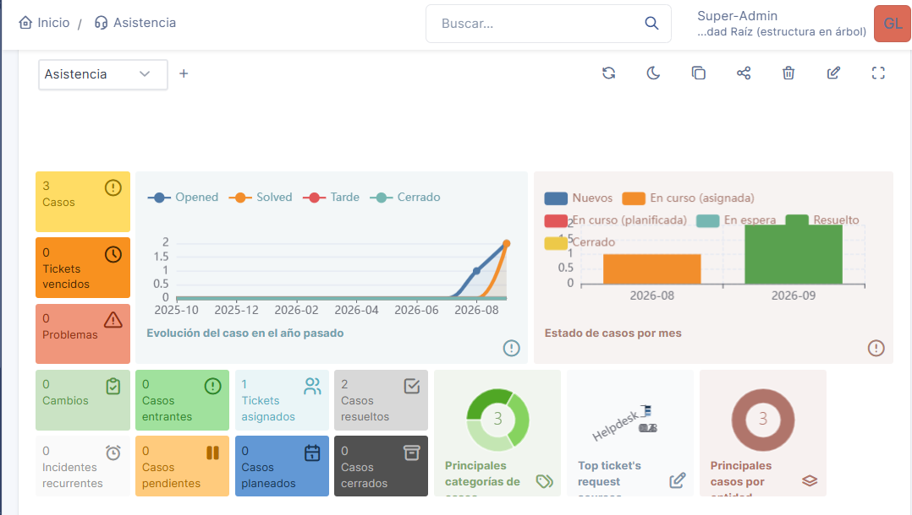
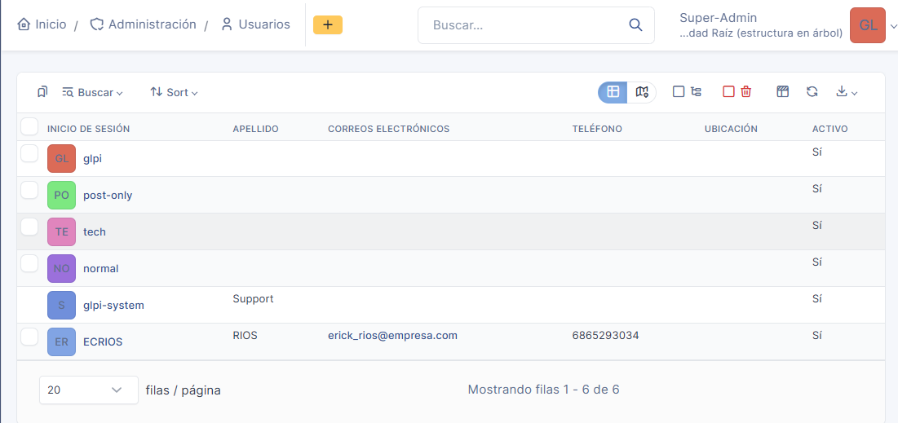
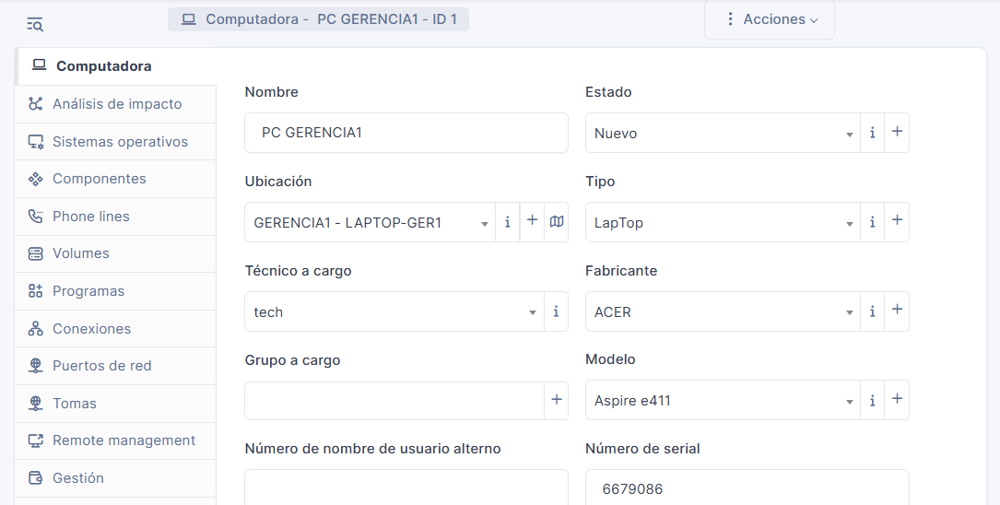
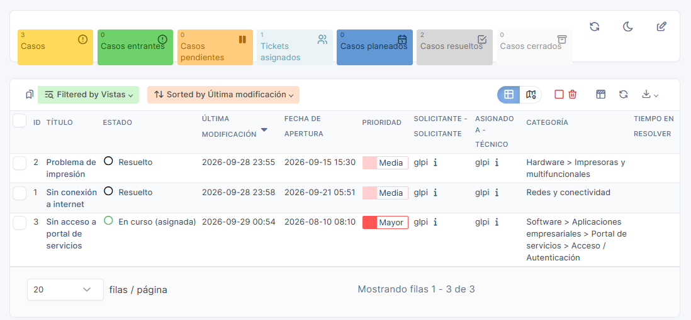

Descripción del proyecto
Proyecto de laboratorio enfocado en la implementación y uso de GLPI como herramienta de mesa de ayuda. El objetivo es desarrollar experiencia práctica en la administración de tickets y en procesos utilizados en entornos de IT Support.
Tecnologías utilizadas
- GLPI
- Windows
- Apache
- PHP
- MariaDB
- XAMPP
Implementación
Durante el proyecto se configuró un entorno local para ejecutar GLPI, incluyendo servidor web, PHP y base de datos.
El laboratorio también permitió practicar la identificación y resolución de problemas relacionados con configuración del servidor, extensiones de PHP y conectividad con la base de datos.
Práctica de Help Desk
Una vez implementado GLPI, se realizaron ejercicios de creación y gestión de tickets simulando solicitudes de soporte técnico.
Las prácticas incluyen clasificación de incidentes, categorías, fuente de solicitud, urgencia, impacto, prioridad y seguimiento del estado del ticket.
Evidencia del proyecto
Gestión de tickets e incidentes
Creación y clasificación de incidentes en GLPI, considerando categoría, urgencia, impacto, prioridad y estado del ticket.

Gestión de usuarios
Creación y administración de usuarios con diferentes perfiles y funciones dentro del entorno de Help Desk.

Gestión de activos de TI
Registro y administración de activos tecnológicos dentro de GLPI para apoyar el control de los recursos de TI.

Casos prácticos de soporte
Simulación de escenarios de soporte técnico para practicar el registro, análisis, clasificación, seguimiento y resolución de incidentes.

Conocimientos desarrollados
- Gestión básica de tickets de soporte.
- Clasificación y seguimiento de incidentes.
- Conceptos de urgencia, impacto y prioridad.
- Instalación y configuración de aplicaciones web.
- Resolución de problemas de configuración.
- Administración básica de servicios de Help Desk.
- Gestion de activos de TI.